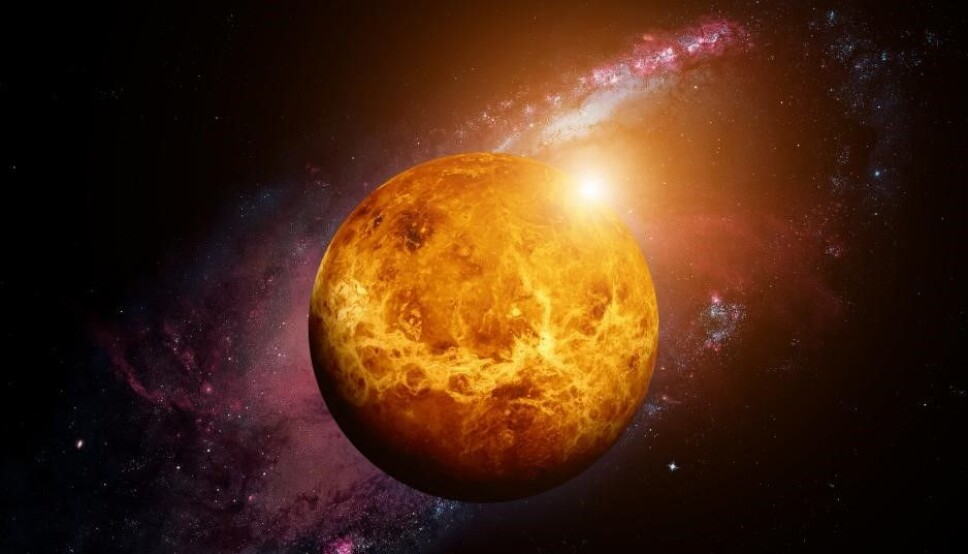

About Venus
Venus is the second planet from the Sun. Venus has a reflective, whitish atmosphere that is mainly composed of carbon dioxide. Venus has a surface temperatures over 400 °C (752 °F), mainly due to the amount of greenhouse gases in the atmosphere. Venus may have had liquid surface water early in its history with a habitable environment, before a runaway greenhouse effect evaporated any water and turned Venus into its present state.
- Diameter: 12,104 km
- Orbit: 0.72 AU from the Sun
- Interesting Fact: Venus is the hottest planet in the Solar System, with surface temperatures often exceeding 460°C, even though it's not the closest planet to the Sun.